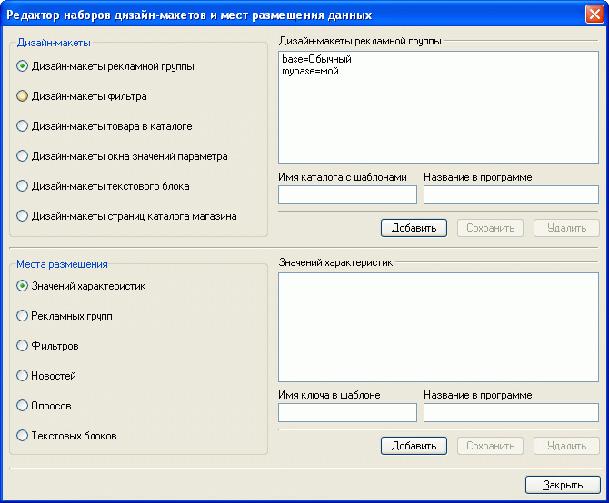
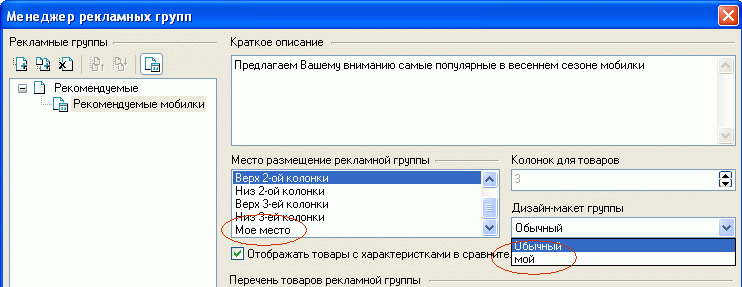

Данная настройка предназначена для профессионалов, умеющих создавать и редактировать шаблоны!
В программе Melbis Shop имеется встроенный редактор наборов дизайн-макетов и мест размещения данных. В левой верхней четверти окна редактора производится выбор требуемого элемента страницы. В правой верхней части окна можно увидеть существующие для этого объекта дизайн-макеты, посмотреть для них имя каталога с шаблонами и название в программе, при необходимости - добавить новый макет. Например для рекламных групп добавить макет "mybase" и указать для него имя каталога с шаблонами "mybase" и название в программе "мой".
В левой нижней части окна выбираются места размещения определенных элементов страниц, в правой нижней части- можно увидеть имена ключей в шаблоне и соответствующие этим ключам названия в программе, добавить новые:

Для указанного примера в менеджере рекламных групп появится возможность выбора дизайн-макета группы из существующих и возможность выбора нового места его размещения:

Следует учесть, что само по себе добавление макета во встроенном редакторе не приводит к созданию самого макета, а лишь позволяет создать метку, указывающую на место размещения шаблона или папки с шаблонами, аналогичными шаблонам обычной группы, а добавление нового места размещения данных - к появлению в программе возможности это место выбрать. Для того, чтобы выбранный объект впоследствии был действительно вставлен во вновь определенное место, имя ключа должно быть вставлено в шаблон.